FogBank
Welcome to FogBank - the National Institute of Standards and Technology’s 2D Single Cell Segmentation application, developed by the Information Technology Laboratory-Software and Systems Division at NIST Gaithersburg.
The separation of touching cells in microscopy images is critical for the counting, identification and measurement of individual cells. Segmentation methods based on morphological watersheds are the current state-of-the-art for cell separation. However, over-segmentation of morphological watersheds is a major problem because of the high level of noise in microscopy cell images. We present a new segmentation method called FogBank that accurately separates cells when they are confluent and touching each other. Figure 1 illustrates segmentation outcomes for a set of algorithmic parameters.
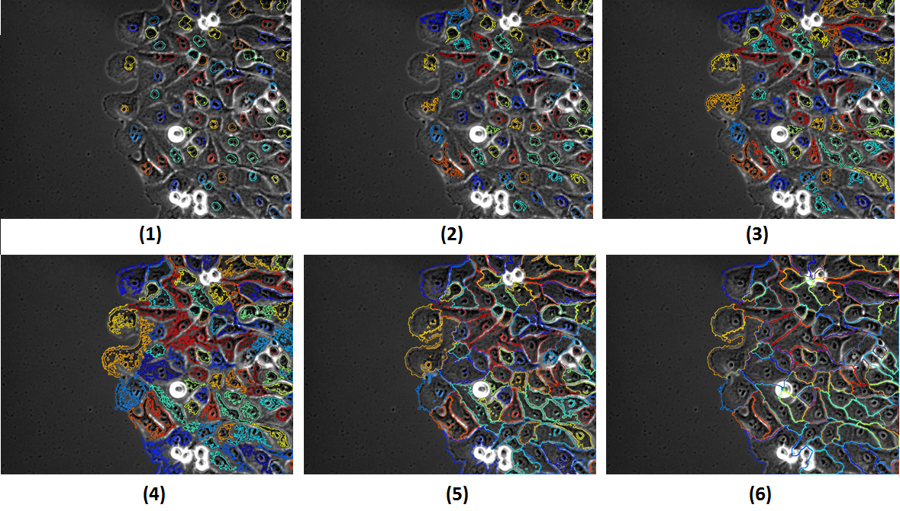
Figure 1: Geodesic region growing for single cell edge detection starting from seed points and following the histogram percentile quantization of intensities in grayscale image and geodesic mask constraint. Images 1 to 6 are the masks generated from the 10th, 30th, 50th, 70th, 90th and 100th percentiles
Description
This technique has been successfully applied to phase contrast, bright field, and fluorescence microscopy images, as well as to binary images. FogBank method is based on the morphological watershed principles with two new features to improve the accuracy of related segmentation methods. First, to eliminate the pixel intensity noise that causes over-segmentation, our new method uses histogram binning to quantize the pixel intensities or pixel intensity gradients. We grow watersheds in increments of multiple pixel intensities rather than single intensities. Second, our method uses a geodesic distance mask derived from raw images to incorporate the shapes of individual cells, in contrast to the more linear cell edges that other watershed-like algorithms produce. The segmentation technique is fully automated and does not require any manual region seeding.
FogBank User Guide
Contents
Disclaimer
NIST-developed software is provided by NIST as a public service. You may use, copy and distribute copies of the software in any medium, provided that you keep intact this entire notice. You may improve, modify and create derivative works of the software or any portion of the software, and you may copy and distribute such modifications or works. Modified works should carry a notice stating that you changed the software and should note the date and nature of any such change. Please explicitly acknowledge the National Institute of Standards and Technology as the source of the software.
NIST-developed software is expressly provided “AS IS.” NIST MAKES NO WARRANTY OF ANY KIND, EXPRESS, IMPLIED, IN FACT OR ARISING BY OPERATION OF LAW, INCLUDING, WITHOUT LIMITATION, THE IMPLIED WARRANTY OF MERCHANTABILITY, FITNESS FOR A PARTICULAR PURPOSE, NON-INFRINGEMENT AND DATA ACCURACY. NIST NEITHER REPRESENTS NOR WARRANTS THAT THE OPERATION OF THE SOFTWARE WILL BE UNINTERRUPTED OR ERROR-FREE, OR THAT ANY DEFECTS WILL BE CORRECTED. NIST DOES NOT WARRANT OR MAKE ANY REPRESENTATIONS REGARDING THE USE OF THE SOFTWARE OR THE RESULTS THEREOF, INCLUDING BUT NOT LIMITED TO THE CORRECTNESS, ACCURACY, RELIABILITY, OR USEFULNESS OF THE SOFTWARE.
You are solely responsible for determining the appropriateness of using and distributing the software and you assume all risks associated with its use, including but not limited to the risks and costs of program errors, compliance with applicable laws, damage to or loss of data, programs or equipment, and the unavailability or interruption of operation. This software is not intended to be used in any situation where a failure could cause risk of injury or damage to property. The software developed by NIST employees is not subject to copyright protection within the United States.
Tips
- When navigating tabs, parameters will be saved automatically and checked for user input at each tab navigation. Only when pressing “Cancel” the user input will be discarded.
- There are help icons throughout the GUI. Whenever possible click on the icon “?” and you can read the help related to the corresponding section.
Main Tab
The FogBank expects 2D grayscale or segmented image sequence in TIFF format. Segmented images are images where the regions of interest are labeled sequentially from 1 to maximum number of objects per image.
The FogBank requires defining the paths to the input image folder in the Raw Images path directory. It is the path to the folder containing the images the user would like to segment.
The common name input is optional and can be used to specify specific images within a folder. For example, if a folder contains a sequence of images similarly named to raw_image_001.tif, the common name could be defined as raw_image_ or raw_ or _image_ etc.
Click on “Load Images” pushbutton to save the path and load the first image. Use the slider to navigate your images.
Please go to the “Foreground Mask” tab to segment the edges of the Region of Interest in your images.
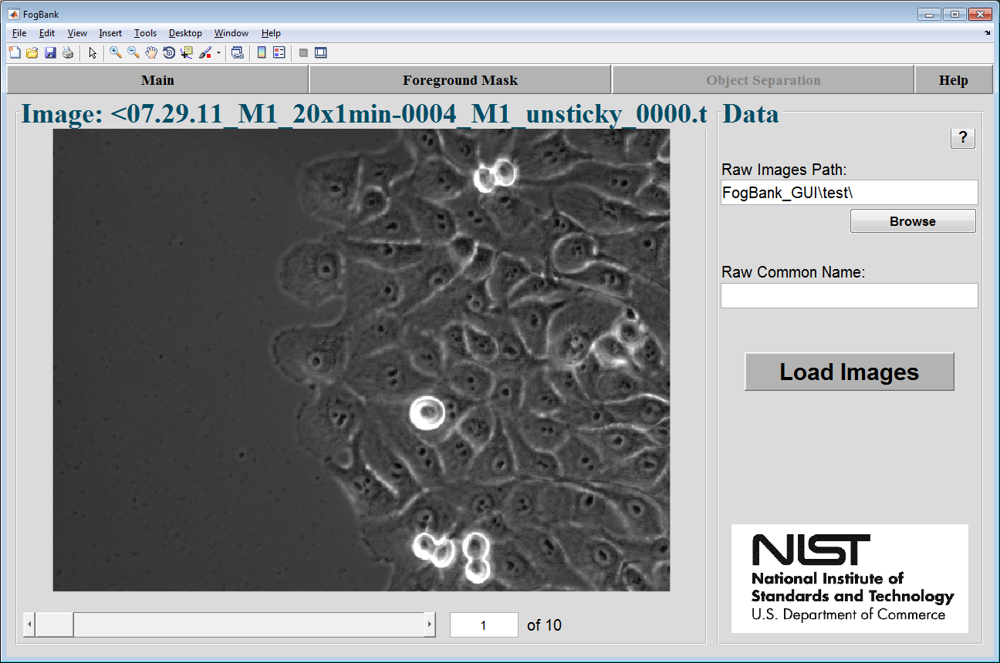
FogBank Main Tab
Foreground Mask Tab
There are two methods to detect foreground mask of the raw images:
1. Detect Foreground Mask using the segmentation method in the tool (the Empirical Gradient Segmentation or EGT) or
2. Import Foreground Mask from an already segmented images.
Detect Foreground Mask
The method implemented in the tool to detect foreground mask is the Empirical Gradient Segmentation technique as described in the paper entitled: “Empirical Gradient Threshold Technique for Automated Segmentation across Image Modalities and Cell Lines”.
Segmentation Parameters:
- Minimum Object Area: This parameter represents the minimum size that any cellular object must have in order to be recognized as a cell or a group of cells. Any object with size smaller than this threshold will be deleted from the mask.
- Keep Holes With: Size Range (AND/OR) Intensity Range. This parameter controls which holes in the image are filled in the mask. Any hole with size smaller than this threshold will be considered as foreground.
- Morphological Operation: The morphological operations include dilate, erode, close and open of a mask. They are post-processing operations applied on the mask after segmentation. It is mainly helpful to smooth the edges of the detected Regions of Interest.
- Greedy: This parameter controls the size of foreground area detected. The higher the greedy is the more foreground is detected. Its main use is to adjust the threshold to handle blurry images or cell lines where the cell edges have intensities similar to background.
Visualization Tools:
- Colormap: This input allows the display of multiple colormap for visualization purposes.
- Display Contour: This input shows the entire foreground mask as detected or just the contour around the edges.
- Display Raw Image: If checked will display the raw image.
- Adjust Contrast: Will adjust the contrast of the raw image for better viewing.

FogBank Foreground Tab for detecting foreground masks
Import Foreground Mask
If the checkbox Import Foreground Mask is checked, this allows for importing the foreground mask from a folder location instead of segmenting it using EGT. The number of masks in the specified folder has to match the number of raw images. Once the folder path and common name are selected, pushing on “Update Foreground Mask” will display the imported masks.
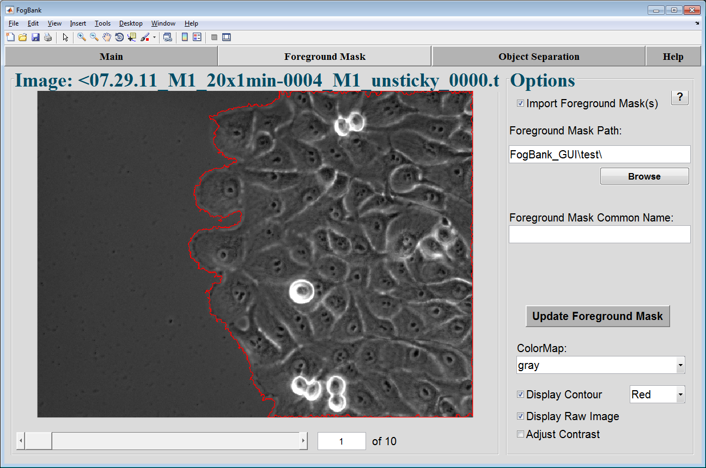
FogBank Foreground Tab for importing foreground masks
Object Separation Tab
Single Cell separation is a challenging problem; it is solved in this tool by using FogBank. This tool is built to handle multiple cell separation problems. Therefore, there are multiple options that can be selected in order to achieve good results. All are explained in details in the following paper entitled: “Single Cell Segmentation Using across Multiple Cell Lines and Image Modalities”.
There are 3 options that can be selected before applying FogBank method on the image:
1. Use Border Mask
2. Use Mitotic Mask
3. Use Seed Mask
The sections below will describe in detail each option.
- Apply Fogbank On: After selecting the options, FogBank algorithm can be applied on four grayscale images used for expanding around the seed points: (1) pixel intensities of the grayscale image (2) the distance transform map where distance is measured from the cell borders, or (3) the distance transform map applied on the binary image, where distance is measured from the seed points, and (4) the gradient map of the raw image computed using the “Sobel” operator. The best map for segmenting single cells depends on the user’s experiment, cell line, image modality and cell density. Please refer to the paper for more details.
- Fogbank Direction: this drop-down menu selects the direction between seed points and boundaries. If low intensity pixels correspond to seed points and high intensity pixels correspond to boundaries then Fogbank direction should be from Min to Max and vice-versa.
- Minimum Cell Area: This parameter represents the minimum size that any cellular object must have in order to be recognized as a single cell. Any object with size smaller than this threshold will be deleted from the mask and its corresponding pixels will be assigned to the closest neighboring cell.
- Show Labels: If checkbox selected, the unique number assigned to every single cell detected in the image will be displayed on the image.
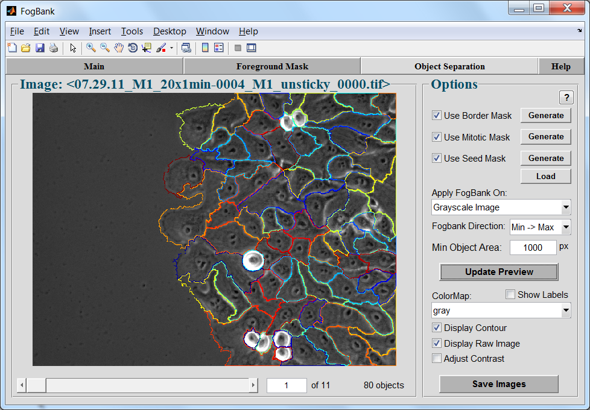
FogBank Object Separation Tab
Use Border Mask
The geodesic distance dI(a,b) between two pixels a and b in the image I, is the minimum of the length L of the path(s) P=(c1,c2,…,cl) joining p and q in I.
dI(a,b) = min{L(P) | c1 = a, cl = b, P ⊆ I}
dI(a,b) = ∞, if a and b are not connected in I
The geodesic distance prevents pixels that are close to a cell but separated by a border from being assigned to that cell. Those pixels are instead assigned to a different cell that is further away in terms of number of pixels on the image, but closer in terms of geodesic distance as shown in the following figure.
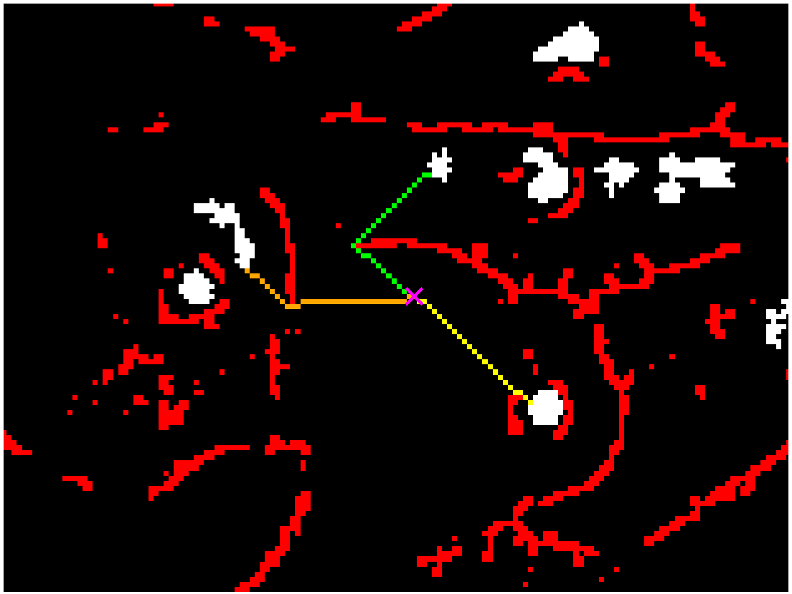
Geodesic Distance Example: A schematic figure to display the allocation of an unassigned pixel (x marked) to the closest seed point (yellow path) by means of the minimum geodesic distance between that pixel and the seed points in the image. The yellow path has a geodesic distance smaller than the orange or green path. The red pixels represent cell boundaries that cannot be traversed.
There are two choices to define the border mask: (1) all pixels can be traversed, or (2) the geodesic mask is used. The geodesic mask is a binary image where pixels with value equal to zero represent boundaries that cannot be traversed, and pixels with value equal to one are paths that can connect two pixels of interest together.
Borders are defined through the input Percentile Threshold. These border pixels can be thinned to a line by checking the option Thin Mask. The borders can also be defined on the gradient image by checking the option Operate on Gradient. Sometimes the borders created circle entirely a Region of Interest, not allowing it to grow beyond the borders. This can be overcome by checking the option Break Holes that breaks any hole in the mask by deleting one pixel from the borders that fully encloses a region of interest as shown in the figure below.
This mask can help separate single cells with boundaries close to manually drawn ones.
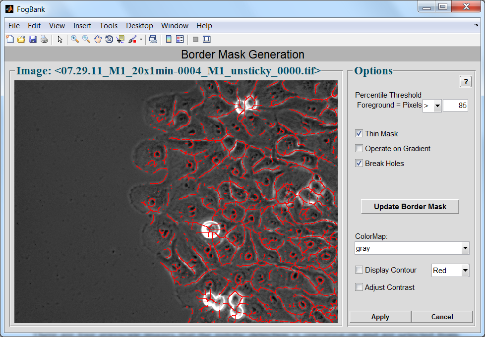
Border Mask Creation Tab
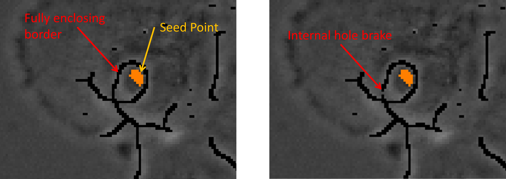
Hole Breaking Example
Use Mitotic Mask
Mitotic events for cells that are dividing are detected in this tool separately from the single cell segmentation. The mitotic mask generated will be added to the single cell detection mask for final results.
There are four grayscale images that the mitotic detection is operating on and are selected from the drop-down menu Image(): (1) the raw intensity image, (2) the gradient image, (3) the standard deviation image, and (4) the entropy image. The choice of a map for detecting cell mitosis depends on the user’s experiment, cell line, image modality and cell density. The STD and Entropy images have a filter radius option that defines the radius of the kernel that is used to compute the STD and the Entropy.
The other options in this window are the same as explained previously in the single cell detection window.
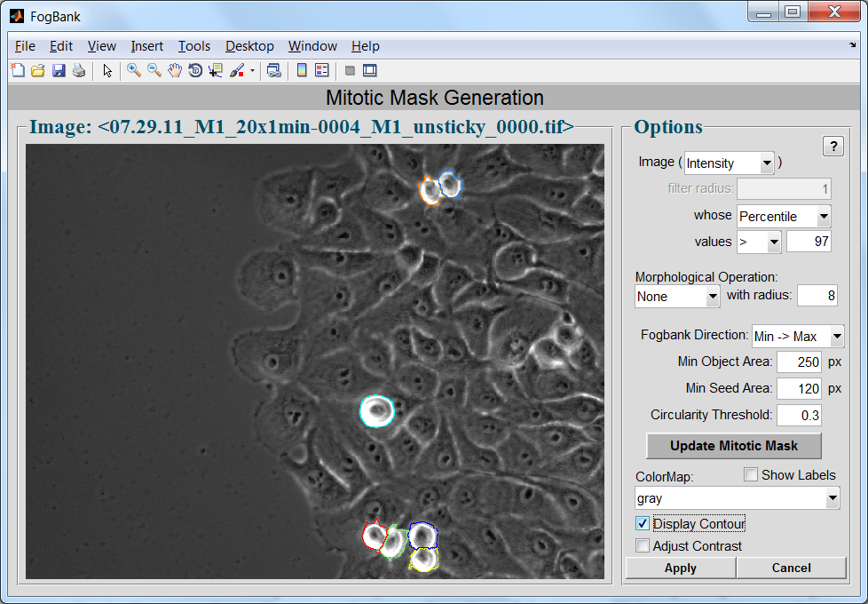
Mitotic Mask Generation Tab
Use Seed Mask
The detection of seed points determines whether an image is over or under-segmented. There are three different methods for automatic detection of seed points that minimize over-segmentation: (1) Apply Minimum Seed Size Threshold on every histogram percentile binning quantization that filters the small noisy seed points, (2) generate a fixed number of seed points per frame, which incorporates biological insight to locate the seeds, and (3) importing seed mask. The choice depends on the problem being solved.
Minimum Seed Size
Uncheck Use Seed Mask and enter a minimum seed size threshold. This method computes seed points as a function of histogram percentile binning quantization with seed size constraint. In contrast with other techniques, intensity thresholds are not defined at every unique intensity value in the image but rather on each percentile value of the image. Using every unique value leads to multiple local peaks and thus to over-segmentation, but binning the pixel intensities reduces the over-segmentation.
Generate Seed Points
In contrast to the above technique, this method detects seed points at only one percentile threshold. The number of seed points remains constant between quantization levels.
Seeds pixels can be detected between two percentile values by adjusting the Percentile Threshold edit boxes. The Seed Size Range is the range of acceptable seed sizes. All detected seeds outside of that range will be deleted. The max seed size can be set to Inf (as Infinite).
Circularity Threshold filters the seeds by the circularity. The value for that parameter is between 0 and 1. 1 being a perfect circle.
Cluster Seeds is a distance that defines a group of seeds as part of the same group. The distance can be computed as the geodesic distance between the seeds centroids taking into account the border mask or the Eucledian distance between the centroids without any use of the border mask.
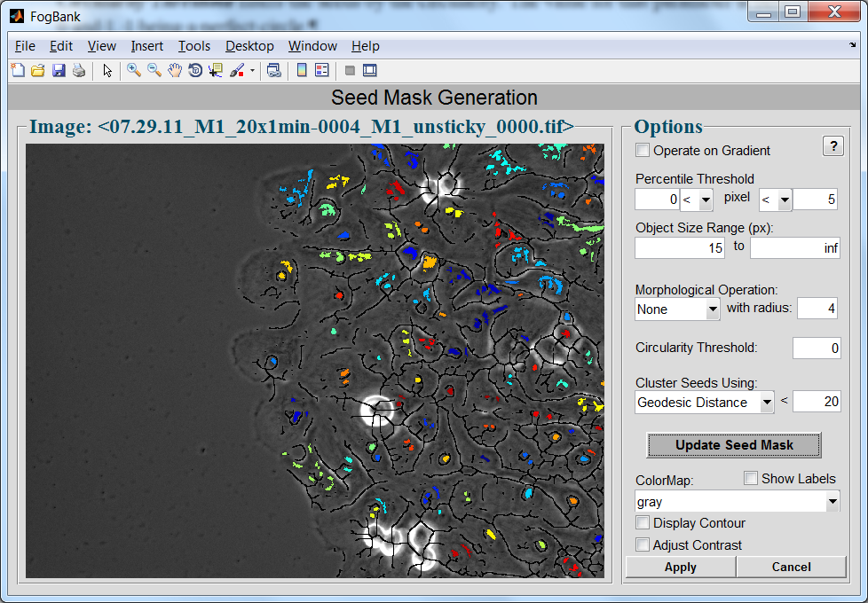
Seed Mask Generation Tab
Load Seed Mask
The pushbutton Load, when the Use Seed Mask checkbox is checked, allows for importing the seed mask from a folder location instead of generating it using the tool. The number of masks in the specified folder has to match the number of raw images. Once the folder path and common name are selected, pushing on “Update Seed Mask” will display the imported masks.
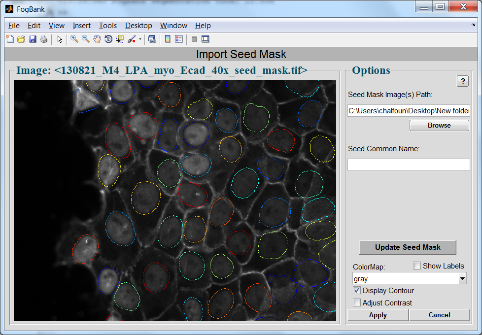
Import Seed Mask Tab
Saving Images
After all the parameters have been established and the satisfied results reached, saving the images can be done by choosing the final format, the common name, the range of images that need to be segmented and saved and the type.
The Range syntax for specifying specific image indices to be segmented from a time-sequence of images a comma separated list. For example, “1,3,5,9” will only segment images “1,3,5,9.” A colon can also be used to specify a range of images. For example, “1,4:8,12 ” would segment images “1,4,5,6,7,8,12.”
The Type of images to be saved are (1) Binary Mask where all foreground is labeled 1 and the background 0. (2) Labeled Mask where the segmented Region of Interest are given a unique label, and (3) As Shown in Preview that allows to save a colored copy of the images as shown in the preview image with the same zoom, colors and text display.
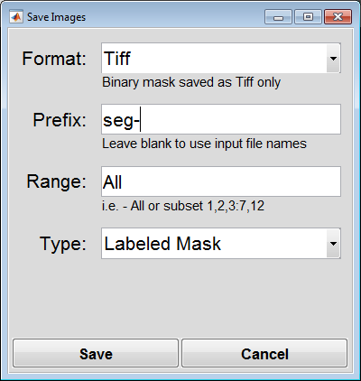
Save Images Dialog Window